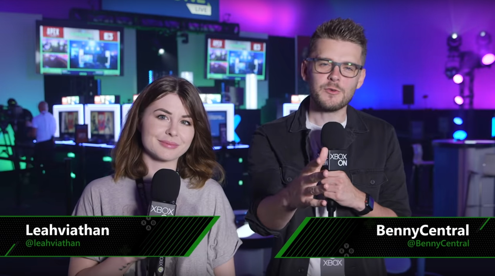
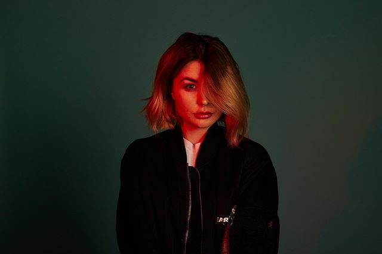

I've been livestreaming since March 2015, previously working as a videographer with cosplay and gaming as side hobbies, I eventually found the opportunity to begin live streaming on twitch.tv and tried it out, intending for it to be a fun side hobby so I could work on my confidence and performing and get more involved in gaming communities.
I started out streaming 'Destiny' and being involved with the fantastic 'Destiny' Twitch community, cosplaying on stream in my early days. I moved to variety streaming a year after starting and have maintained a growing variety channel since then, playing anything I have fun with rather than chasing popularity.
In 2018 I was given the opportunity to join the team at Xbox UK to produce content for their Youtube and Mixer channels and help grow their community. My work with Xbox involved researching, writing and planning Youtube content, presenting to camera, capturing game content, alongside creative planning and execution of daily livestreams on Mixer; creating a fun livestream experience while working with the Xbox brand, and working as the host/entertainer during these streams also. Previous to this I had never done any presenting work. I left Xbox in December of 2019 to pursue other dreams.
Find this work here and here. Examples of videos I have presented in include: this, this and this. Here is also an example of a stream I co-ordinated: clicky! With Xbox youtube content i've been directed to project my voice to suit a specific style of presenting, but I am flexible.
I've been privileged to work with a number of high profile companies, including:
Alongside activation campaigns for lots of high profile games, like Tomb Raider, Sea of Thieves, State of Decay, Halo Wars 2, Destiny 2, and the launch of the Xbox One X console.
I've been involved in a number of charity events, raising over £32,000 for various charities including Cancer Research UK, MIND Mental Health charity, and St. Jude Childrens Cancer Research hospital through livestreams, and i've also been involved with Macmillan GameChangers through Twitch during 24 hour fundraising streams.
I've been involved in a number of news articles, radio shows and online shows about gaming, including BBC World Radio and BBC Three.
I recently filmed a cameo on the yet to be released Live Action game produced by Wales Interactive called 'The Complex'. It definitely reignited my desire to be more involved in traditional acting, something i'm working towards in 2020.
I'm an advocate for normalising the involvement of women in gaming, and my everyday work seeks to support this. I don't want special treatment - I just want every woman out there to know they can enjoy the insane world of gaming and experience joys that they may have felt closed off from until now. Being a visible part of the gaming industry is an important step to this in my mind, and this is something I bear in mind with every opportunity I receive.
In the future i'd love to try pretty much everything! I work hard and take my work seriously, always looking to improve and learn. I'd love to work with motion capture, voice acting, acting, outreach programs to help keep a positive narrative around gaming, game development, and more outside of the world of gaming. Having been heavily inspired by Roosterteeth my dream was to work in a similar environment, producing fun and entertaining content.
In my spare time I like to sing, read, create digital art (I draw my own emotes), and scroll through twitter aimlessly.